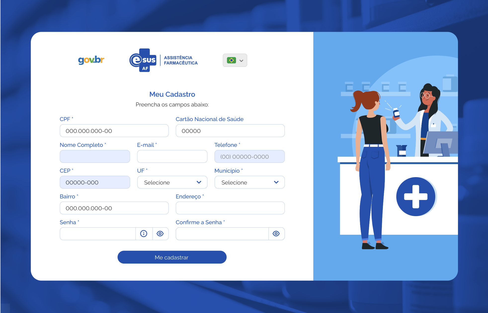
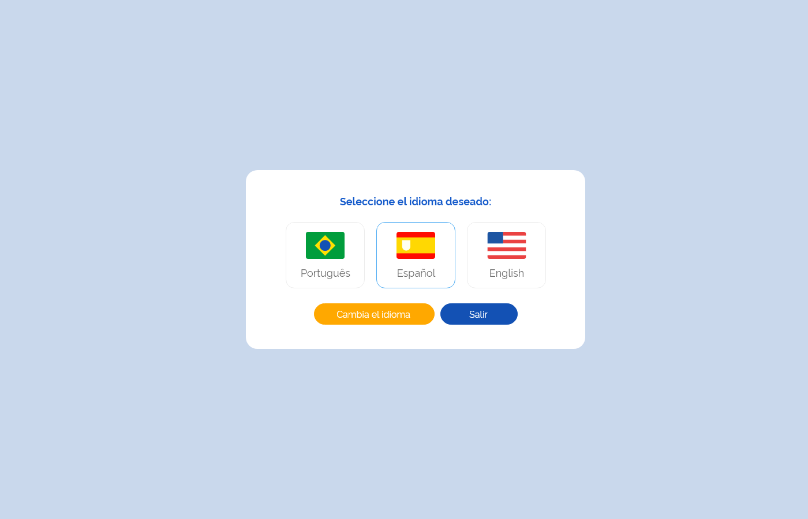
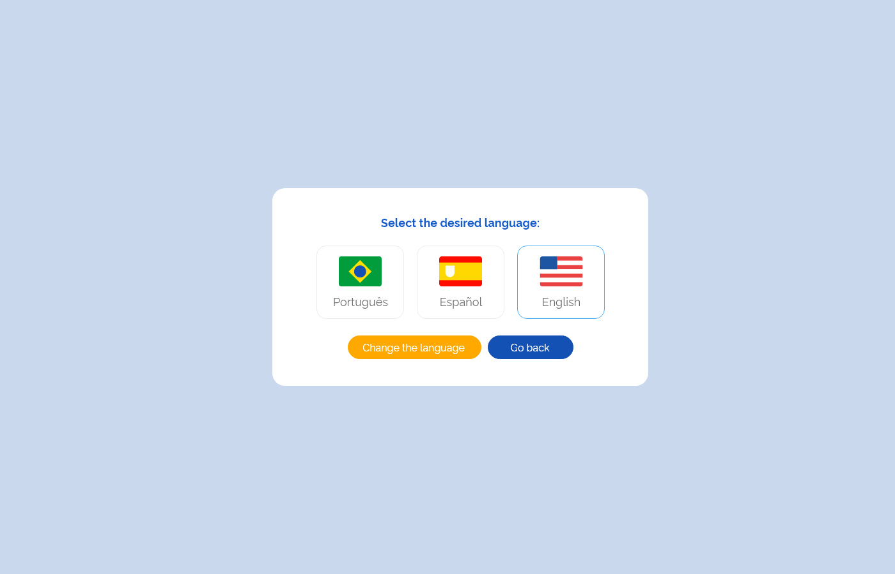

Especificação Técnica 002 - Cadastrar Usuário do Sistema
Descrição
Como usuário quero realizar meu cadastro para acessar o sistema e suas funcionalidades.
Protótipo 001

Elementos de Tela:
- Logotipo gov.br – M
- Logotipo e-SUS AF – M
- Idioma – SU
- Título da página – “Meu Cadastro”
- Subtítulo da página – “Preencha os campos abaixo:”
- CPF* – N (11)
- Cartão Nacional de Saúde – N (15)
- Nome Completo* – A (100)
- E-mail* – A (100)
- Telefone* – N (10)
- CEP* – N (8)
- UF* – A (2)
- Município* – A (100)
- Bairro* – A (100)
- Endereço* – A (100)
- Senha* – A (30)
- “Informação Senha” * – M
- “Visualizar Senha” * – M
- Confirme a Senha* – A (30)
- “Visualizar Senha” * – M
- “Me Cadastrar” – BT
- “Retornar ao Login” – BT
Legenda
TIPO: A = Alfanumérico, N = Numérico, D = Data, M = Imagem, BT = Botão, LK = Link, SU = Seleção Única, SM = Seleção Múltipla, AC = Autocomplete, * = Obrigatório.
Critérios de aceite
- O acesso a funcionalidade é dado através da tela de “Login”, quando for acionada a opção “Quero me cadastrar”;
- O sistema deve considerar o idioma “Português-Brasil” como padrão, permitido ao usuário alterá-lo a qualquer momento;
- Quando o usuário acionar opção “Idioma”, o sistema deve apresentar as alternativas de idiomas para utilização do sistema na língua desejada; Protótipo 002
- Quando o usuário informar o CPF, o sistema deve verificar se existe um cadastro prévio, caso sim, deve preencher automaticamente o campo “Nome Completo” e permitir edição;
- Quando o usuário informar o CEP, o sistema deve recuperar através da integração com o portal dos Correios e preencher automaticamente os campos “UF”, “Município”, “Bairro” e “Endereço” e desabilitá-los para edição;
- O sistema deve apresentar o ícone “Informação Senha” com o texto:
- Critérios para a nova senha:
- Mínimo de 8 caracteres
- Máximo de 30 caracteres
- Letras maiúsculas: pelo menos uma
- Letras minúsculas: pelo menos uma
- Número: pelo menos um
- Caracteres especiais: pelo menos um
- O sistema deve apresentar o ícone “Visualizar Senha” para permitir a visualização da senha informada;
- Quando o usuário acionar a opção “Me cadastrar” o sistema deve:
- Verificar se os campos obrigatórios estão preenchidos, caso não, realçar o campo e apresentar mensagem de alerta; MSG053
- Verificar se os dados informados nos campos “Senha” e “Confirme a Senha” são idênticos, caso não, realçar o campo da confirmação da senha e apresentar mensagem de alerta; MSG054
- Atendendo as validações, o sistema apresenta mensagem de confirmação ao usuário; MSG055
- Caso confirme a ação, o sistema grava os dados do usuário, apresenta mensagem de sucesso, envia um e-mail de confirmação ao usuário e direciona para à tela de login do sistema; MSG056MSG057
- Caso a ação não seja confirmada, permanece na tela de cadastro de usuário.
- Quando o usuário corrigir um alerta emitido pelo sistema o campo não deve permanecer realçado;
- Quando o usuário acionar a opção “Retornar ao Login” o sistema deve retornar à tela de “Login”.
Protótipo 002


Elementos de tela
- Título da página – “Selecione o idioma desejado:”
- Bandeira Brasil - Português – M / SU
- Bandeira Espanha - Espanhol – M / SU
- Bandeira Inglaterra - Inglês – M / SU
- “Alterar Idioma” – BT
- “Sair” – BT
Legenda
TIPO: A = Alfanumérico, N = Numérico, D = Data, M = Imagem, BT = Botão, LK = Link, SU = Seleção Única, SM = Seleção Múltipla, AC = Autocomplete, * = Obrigatório.
Critérios de aceite
- Quando o usuário selecionar o idioma para a utilização da aplicação, o sistema deve alterar automaticamente o texto da mensagem e dos botões para o idioma selecionado.
- Quando o usuário acionar opção “Alterar Idioma”, o sistema deve alterar o idioma da aplicação;
- Quando o usuário acionar opção “Sair”, o sistema deve retornar à tela de “Login”.